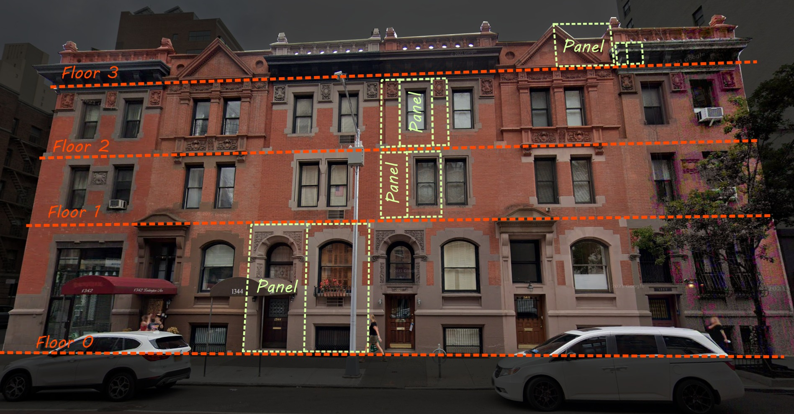
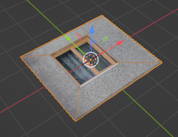
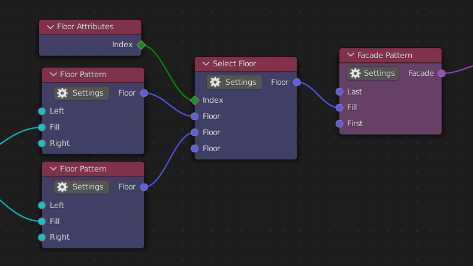

Data Structure
{kind=link}
If you have a look at the facade you can find that it can be split into a few principle blocks from which the whole facade can be recreated. This feature of human dwelling can be used for simplifying modelling of buildings. It’s possible to create a few principle blocks, panels, use some rules to distribute them along some surfaces, facades, and combine facades into a building. To define surfaces and building base geometry is used. The advantage of this approach is that the same panels and rules can be applied to multiple objects. Also it possible to re-apply the rules whenever an object is changed.
Base geometry
This is basic Blender mesh object which should be turned into a building. Before applying rules its geometry is parsed into a facades. Face is recognized as part of a facade according to certain rules:
It should be vertical
It should be a quad
Faces of one facade should be connected to each other
Faces of one facade should be oriented in the same direction
Faces with different materials go to separate facades
Warning
By quad means face with 4 vertices. Though the face on the picture has shape of a quad it is not recognized as a quad because it has extra 5 vertex. Non the less the face won’t be ignored but also it won’t be part of any facade and will represent the entire facade by itself. In future this limitation will may gone.
Also it’s possible to split faces into different facade by separating them with
line of edges with crease value equal to 1.
All faces which was not recognized as facade faces are ignored and stay as they are.
Facade
Facade is 1D array of floors which go from bottom to top. Floors are also 1D arrays of panels so about the entire facade data structure you can think as a 2D array or a table. But unlike table each row can have different number of cells and cells are not necessary joined into columns. Use Facade Pattern to create a facade.
Though the shape of 2D array can’t be anything but rectangle a facade can have any shape which can be build with mesh of quads.
Facade can have any size. Number of floors and number of panels is automatically adjusted to available space herewith size of panels can be a bit scaled.
Also there is snapping feature. Floors borders and borders between panels can snap to closest vertical and horizontal edges. If distance between parallel edges is to close to put there a floor or a panel then such edges are just ignored.
Floor
Floor is just horizontal line of panels. The panels are ordered from left to right. Floor has some height. By default it is equal to highest panel in a row. If facade has panels with different height their height is scaled to height of the floor. Floor can be created with Floor Pattern Node.
Panel
Panels are elementary building blocks of a facade. It typically is a 2D shape which represents one part of a wall or another. Though it’s a 2D shape it can have protruding parts. Panels are used to be distributed along a facade surface. Panel can be created with Panel Node.
Important
{kind=link}
You should be careful about orientation of the panels. They should lay on horizontal surface (XY) where X axis is parallel to facade length, Y axis is parallel to facade height and Z axis is perpendicular to facade. Also it’s important to know that origin is also took into account during panels instancing. Typically it should be in the center of a panel.
If XY orientation of the panels is not convenient you can always rotate and move panels in object mode however you like.
By default the size of a panel is determined by its bounding box, but it’s possible override the size with Set scope operator. It is useful in case if panels should have some overlapping parts. Also with the operator it’s convenient to put origin into center of the panel.
Fields
First of all fields are some elementary data like number, string etc. They represent some characteristic of facade element as its size or index of its position. Fields share the same concept as Geometry Nodes. Read official documentation.
For example on the picture below Index socket of Floor attributes node outputs a field. It means that whenever Select Floor node try to read floor index it actually evaluate a function and thus Index attribute is not some context value but value which depends on the context.
{kind=link}
Actually every node in the add-on is a field. You can create some floor and use it in different facades without need of copying it.
Note
As in Geometry nodes project different shapes of sockets are used but their meaning is different. In Building nodes also there are sockets with two types of shape. Diamond shape is used for sockets which transfer primitive data type like numbers, strings, booleans. Circle shape is used for more complex data like panels, floors etc.